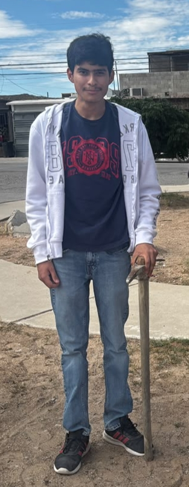

¡Bienvenido a la práctica 2!
En la siguiente práctica utilizamos archivos CSS y Bootstrap para realizar un sitio web con formato. A lo largo del sitio web podrá ver el uso de distintas etiquetas de HTML, que le dan un diseño y una estructura más organizada al sitio web.
En el sitio web podrás conocerme de una mejor manera, gracias a los distintos documentos HTML que aquí se encuentran.

"Nunca dejes para mañana lo que puedas hacer pasado mañana" -Mark Twain